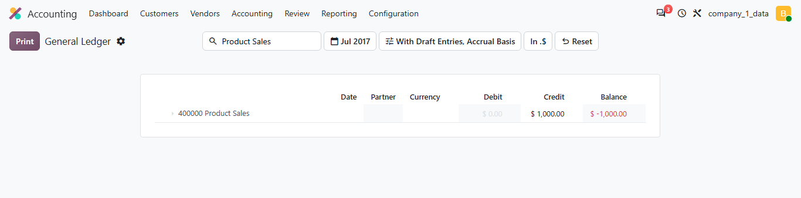
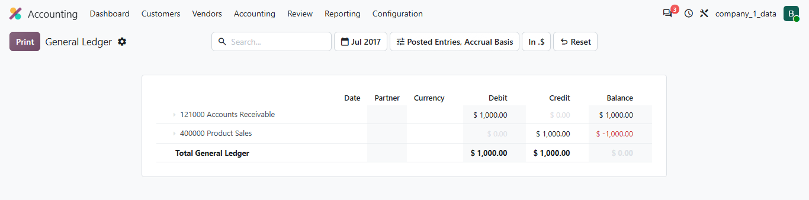

Bring any accounting report back to its default view in one click.
Accounting reports remember every filter of your session: period, journals, options, search text. That is handy until you need the plain report again. This module adds a Reset button next to the filters of every accounting report.
Draft entries included and a search applied: only part of the report is shown.

Default options, empty search bar, full report.

|
1
Clears the session filtersPeriod, journals, extra options and the other filters stored for the report are dropped. |
2
Empties the search barThe search text is removed and the hidden lines are displayed again. |
3
Reloads the defaultsThe report is loaded again exactly as when you open it from the menu. |
The button is added to the standard report layout, so all of them get it.
1. Install the module. There is nothing to configure.
2. Open any report from Accounting › Reporting.
3. Click Reset whenever you want the default view back.
Requirements
Odoo 20.0 Enterprise with the Accounting Reports application
( |
SupportQuestions or issues: herianto.oy@gmail.com |